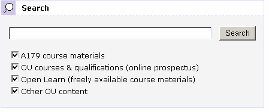

January 24, 2007
New OU Search Tools
At a show'n'tell session for the new OU VLE yesterday (which in the best tradition of IT projects is largely late, under-resourced and, er, late) the new OU search interface was demonstrated. The service is live, but unless you're into that sort of thing you perhaps haven't noticed, or seen much new it for you. So here are a few things I spotted about it (more later when I get a chance to look at the Advanced Search tools).
If you are signed in to the OU website as a staff member, you'll get a search interface like this:

The course materials option is permissions sensitive and searches over what exactly, I'm not sure (more info when I have it/have dug a bit deeper...)
As a staff member I get to search 'all' OU materials; for a student regsitered on one or more courses, they would have options to search over the materials for each of the courses they are currently registered on. (If anyone can send me a screenshot of what a 'student' interface looks like, I'd appreciate that. Thanks Richard :-)

The other options are available to public/unauthenticated visitors to the site. The provision of the OpenLearn (not Open Learn?) materials search is an interesting - and welcome - one, though the rationale behind its provision is not clear to me.
The results page is a tabbed display over the fields selected for the search:

I don't like the the list above the results, particularly - I think something like the Clusty interface is far tidier:

Looking at the item level results, I think that emphasising the the search results is a good idea, but I'm not sure about the colour of the URL? I find it a bit dominant/too close to red (which pulls at the user's attention a little too much for my liking ).

I wonder whether any eyetracking tests were run on a monochrome mockup of the results page? For example, do most users use the URL to help them filter the results/choose the ones they are going to click through? (I don't recall reading a critique of this before - must chase that up...) Certainly, I'd expect that attention will be drawn to the URL in the current scheme by virtue of the colour, so it would good to know why/how users use this info, even if it's an unconscious use.
[Reflecting on this personally, I think I use the URL in a results item to see -
a) where the source is; I discount things like http//:my.site.is.brilliant.com/climateChange.htm
b) what the filetype is (for occasions when I'm after a known doc type and am too lazy to limit the search (does OU advanced search support filetype: limits, I wonder? :-)]
On a related issue, I wonder how (if?) users use the percentage relevance score to any great extent (and this metirc is relevant according to what, exactly?) Is the relevance score typically used by people when they are on page 2 or 3 of the results listing, maybe, as a guide for when to stop looking at lower results pages? Or evenm to judge whether the any of the results are relevant (perhaps reinforced by briefly clciking through to, and scanning over, one or two sample results?)
The page size (23k etc) is another of those features that I know I use it as a crib, on occasion. For example, when I come across a pdf or ppt file, I use file size as clue to how large the doc is likely to be, and infer in part from that how detailed it is and how long it will take to a) download; and b) read! In fact, I actually use filesize more rigorously than that, because I use it to decide whether or not I'll preview the document/skim it 'online' and either download it to read it later, bookmark the link, or print it off unread. (I tend to bookmark/download larger docs, skim smaller ones).
Looking at the bottom of the page, we get the search box pre-loaded woth the current search term:

While I'm all for this, I'd actually prefer it if the search box was at the top of the page too - (like on most search engines). I wonder if there is any reason for NOT doing that in this case? The current scheme forces you to glance over all the search results before you can run another search. For users who can discount the search as returning useless results by skimming the top two or three results, it's not obvious how to run another search if the search box is below the fold.
On a design point, the width of the Search again box is not the same as the width of the results listings, which jars on my eye a little? There are two alternatives here, I guess - to centre the Search Again? box, or make it the same width?
One final point is that the new OU search design is different to the 'new' Library search (developed last year):

I wonder if there is an intention to normalise/standardise these? Certainly, I'd expectLibrary search results to start to appearing in the main OU search tool at some point - the design seems like it has been set up to be extensible (though the lenght of checkbox lists may start to become problematic unless they are moved to a sidebar).
Posted by ajh59 at January 24, 2007 07:38 PM